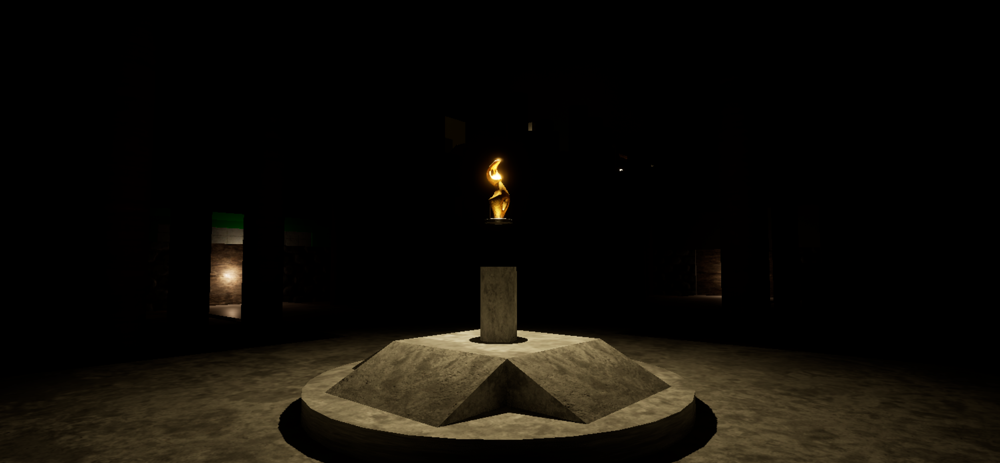
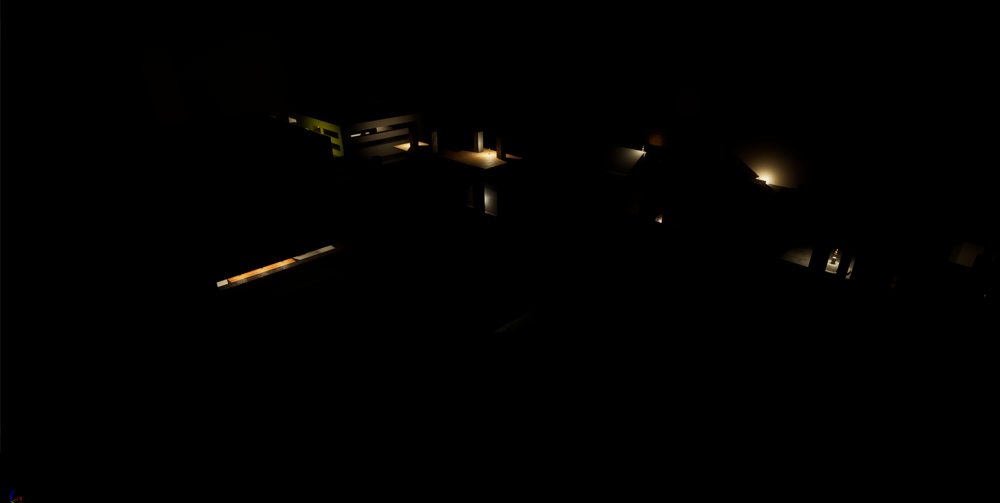
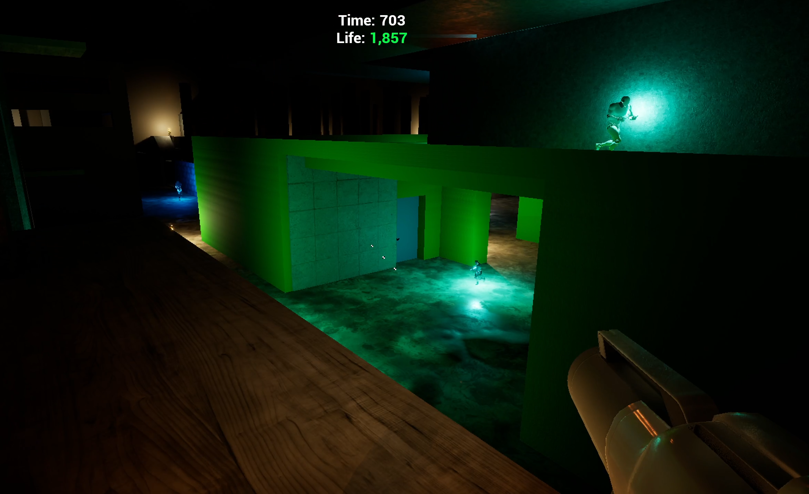
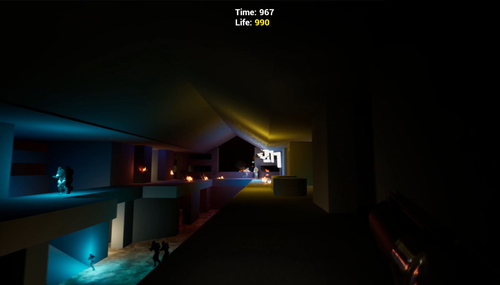
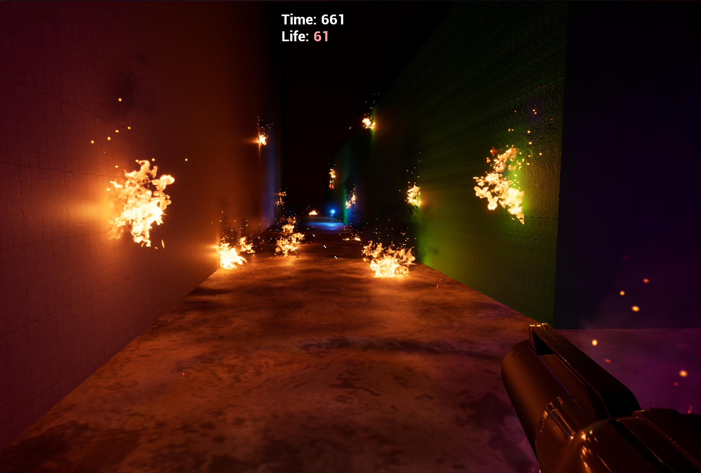

Liminal DARK
Dark room boomer shooter made in Unreal Engine 5

Liminal Dark is a first person endless arena shooter where they're coming to get you, you life is slowly wasting away, and the lights are out. Run, jump, and gun your way through hordes of the bright in your futile quest to survive the Dark City.
Liminal DARK was made as a learning project to experience the Unreal Engine, as well as nanite and Lumen. During my time with it, I learned that the Unreal Engine is a very opinionated tool that was built for specific kinds of projects, and each part was manufactured for a different owner. If I had or was part of a team, I could see myself returning, but not as a solo developer.
Screenshots



